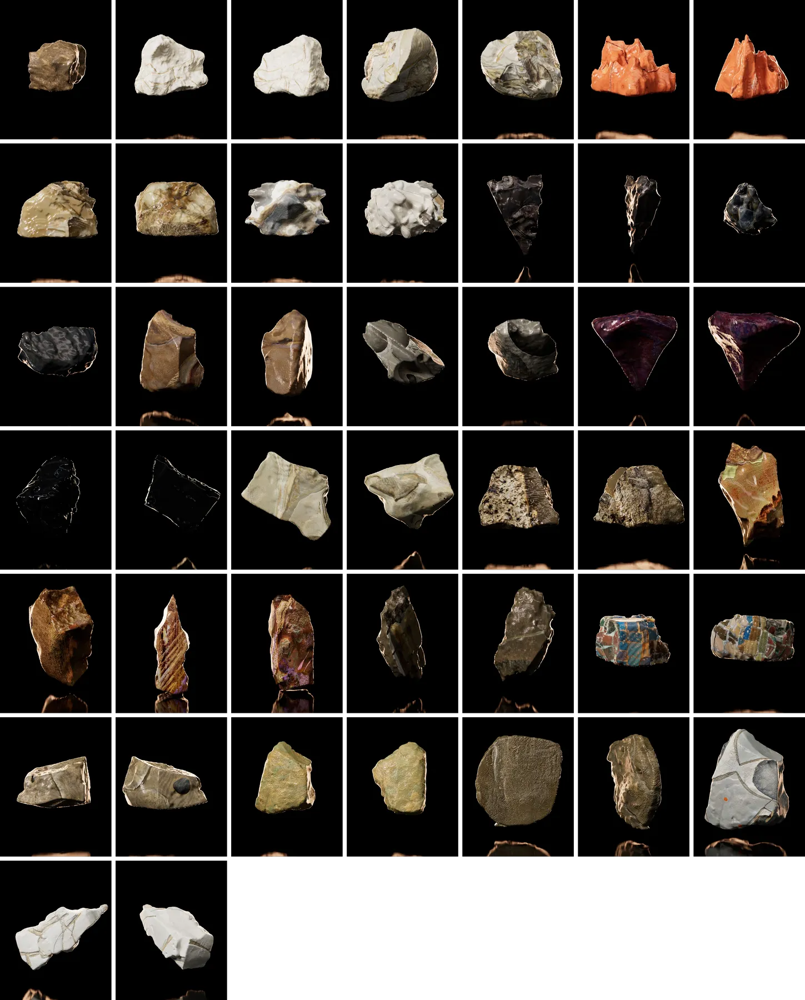

procedural fragments
Duration: 06:30
Video, 3D, AI
This work looks at Emvin Cremona’s use of unconventional textures in his glass paintings, focusing on how he worked with materials in experimental ways. It translates elements from his glass works into three-dimensional rock-like forms, shaped and textured using references from his original work. These forms don’t aim to imitate, but to explore how his approach to surface and material can be experienced and carried forward.
The soundscape (designed by Jamie Barbara @naqara) is derived from glass sounds, including the resonant hums produced by striking glass surfaces, and digitally altered tones that capture the reflective and brittle qualities of the material. The combination of organic and synthetic sounds is designed to mirror the tactile exploration present in the visual aspects of the artwork.
